Actividad 4: Instalación y configuración de dispositivos de RED
Índice
- Configuración del Switch
- Configuración del Router
Configuración del Switch
Para acceder a la interfaz gráfica del switch lo primero será cambiar la IP para que podamos conectarnos de forma correcta.
Desde cualquier navegador ponemos la puerta de enlace en el buscador y nos mandará a una página en la que deberemos poner el usuario “admin” y la contraseña “Campusfp1234”.
Captura: Acceso al switch
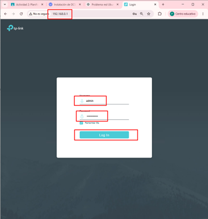
En la segunda pestaña deberemos darle a lo que dice “L2 FEATURES” y en las VLAN damos a donde dice “Add”.
Captura: L2 Features → VLAN Add
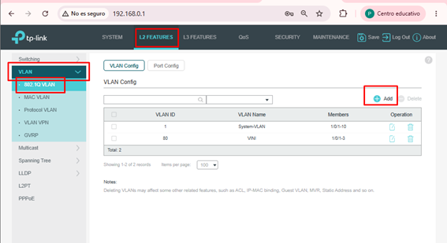
Nos aparecerá la siguiente ventana en la que deberemos asignar el ID (70) y el nombre de la VLAN (DARIUS). Seleccionamos el puerto que vamos a conectar al router en el primer apartado, y en el segundo los puertos que vamos a usar para los dispositivos (Server y PC). Terminamos dándole a Create.
Captura: Creación de VLAN 70
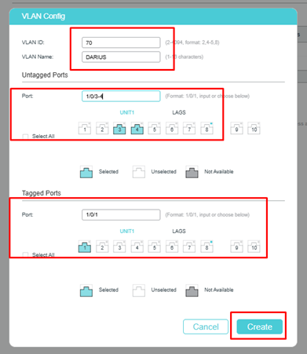
En la misma zona damos a Port Config, seleccionamos los puertos que vamos a usar y los asignamos a la VLAN anteriormente creada (VLAN 70).
Captura: Asignación de puertos a VLAN 70
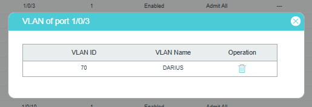
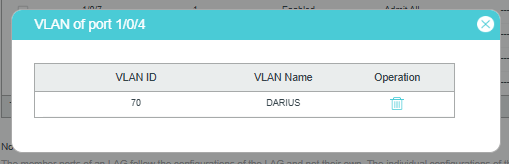
Configuración del Router
Primero creamos las interfaces VLAN en Interface > VLAN > botón +.
Captura: Creación de VLAN en el router
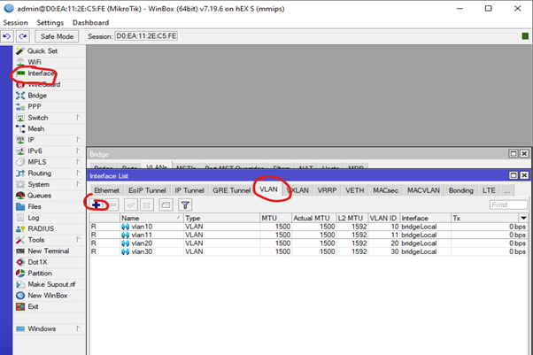
Una vez en la pestaña de Interface, creamos nuestra VLAN con su nombre, ID de VLAN y ponemos la interfaz en bridgeLocal.
Captura: VLAN configurada en bridgeLocal
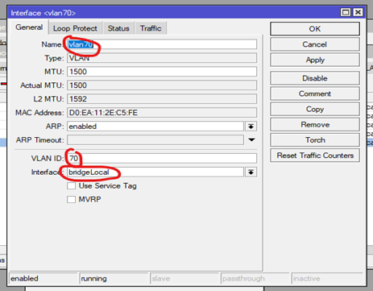
Para asignar direcciones IP, nos metemos en IP > Addresses > botón +. En la pestaña nos aparecerá la lista para añadir nuestra dirección IP.
Añadimos nuestra dirección IP que tenemos asignada con el nombre de nuestra interfaz.
Captura: Asignación de IP a la interfaz
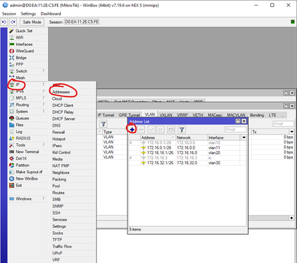
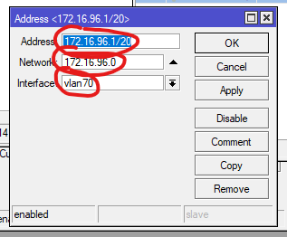
Ahora configuramos el Servidor DHCP para cada VLAN. Seleccionamos IP > DHCP Server > DHCP Setup.
Ponemos nuestra VLAN, con nuestra dirección IP y su máscara, la puerta de enlace, IP que usará el router y el DNS de Google.
Por último, dejamos por defecto el tiempo y pulsamos Next y OK.
Captura: Configuración del DHCP
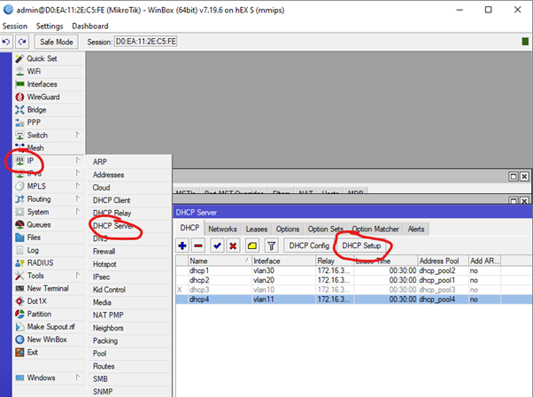
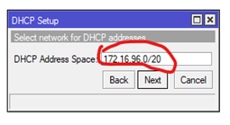
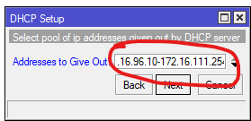
Para configurar el Bridge, pulsamos Bridge > VLANs > botón +.
Agregamos el Bridge y el puerto físico ether3.
Captura: Configuración del Bridge
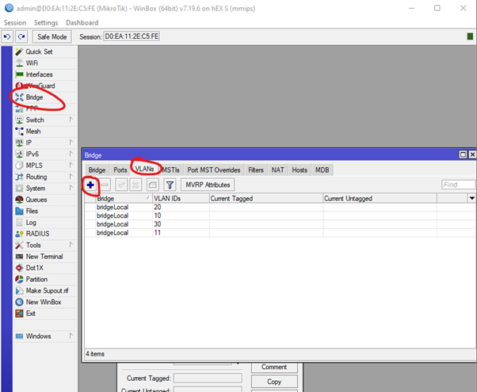
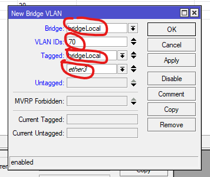